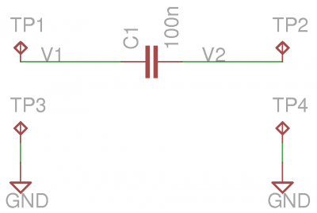
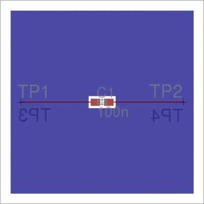
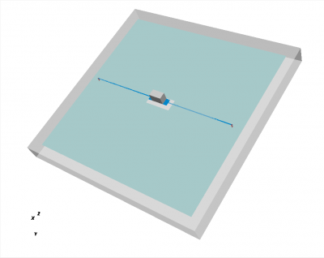
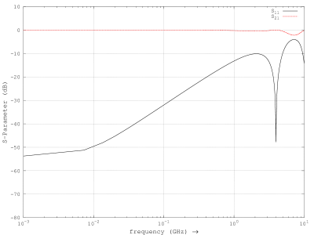

Tutorial: Importing with hyp2mat
From openEMS
Introduction
hyp2mat is a package which allows you to import pcb's from your CAD system in openEMS for simulation. A HyperLynx file contains all information needed for simulating the board: board layout, netlists, component values, component placement, board dielectric constant, copper thickness and resistivity.
To use hyp2mat your CAD system has to be able to export in HyperLynx format. A number of CAD system export HyperLynx, e.g. Altium Designer, Expedition, PADS, CADsoft Eagle.
In this tutorial the freeware version of Eagle is used.
This tutorial covers:
- Exporting to HyperLynx
- Importing in openEMS
- Adding a component
- Adding excitation and load
- Setting boundary conditions
- Setting up a mesh
- Simulation
- Calculating the s-parameters
- Calculating the step response
As an example, we'll use a practical problem in pcb design: a capacitor in a microstrip line.
A microstrip line is used to connect a transmitter and a receiver. A capacitor is placed in the microstrip line to provide ac coupling between transmitter and receiver. Unfortunately, the capacitance between capacitor solder pads and the ground plane causes a mismatch between capacitor and microstrip. A common solution is partially removing the ground plane below the capacitor. This lowers the capacitance of the solder pads to the ground plane. A trial-and-error method is used to determine the size of the hole in the ground plane for a good match between capacitor and microstrip.[1]
We'll now create a printed circuit board with a microstrip line and a capacitor, and then simulate the board using openEMS. If you are running Windows, the tutorial can be found at openems\hyp2mat\eagle\tutorial. If you are running linux and have installed the hyp2mat-demo package, tutorial files are at /usr/share/hyp2mat/eagle/tutorial. Files for the tutorial can also be downloaded from github. Copy tutorial files to a directory where you have read/write access before running.
Exporting to Hyperlynx
|

|

|
This shows schematic and board of our test setup. The schematic is simple: a 100n capacitor between two test pads. An excitation, e.g. a signal generator, is connected between TP1 and TP3. A load, e.g. a 50R resistor, is connected between TP2 and TP4. The board has a ground plane and a signal layer. The ground plane is shown in blue. There ground plane has a cutout in the center, where an SMD capacitor is placed. A microstrip runs from TP1 to capacitor and from capacitor to TP2. At the back of the board there are two test points, TP3 and TP4, which connect to the ground plane.
When drawing the board, it is important to design the board for simulation:
- Avoid unnecessary 'small' features. Small features mean long simulation times.
- In general, only a few nets of interest are simulated, not the whole board. When importing in openEMS, the net names are used to select the signals of interest. Make sure all wires and polygons which you wish to simulate have been assigned to a net. Give all nets which you want to simulate a name.
- During simulation, we will place excitation and load at component pins. Add test points if necessary.
At this moment, the following limits apply:
- polygon edges are always drawn with width 0 (zero).
- polygons should not be self-intersecting
When using CADsoft Eagle:
- Before exporting a board to HyperLynx in Eagle, make sure you have downloaded the latest version of the hyperlynx.ulp script https://forums.autodesk.com/t5/eagle-forum/hyperlynx-export/m-p/7254537 .
- To export to HyperLynx, switch to the Eagle board editor, and type:
ratsnest run hyperlynx
The resulting HyperLynx file has the .hyp suffix. - At this moment, the Eagle script which exports Hyperlynx has hardcoded values for copper thickness, dielectric thickness, and dielectric constant. Changing these values requires modifying either the Eagle script or the exported file. This is a deficiency. Other CAD systems use actual board values.
This tutorial includes a ready-to-run Hyperlynx file, msl.hyp. Including a HyperLynx file allows for a stand-alone tutorial. If you're interested how copper and dielectric thickness were changed for this tutorial, look at msl.patch.
Running openEMS
openEMS runs in matlab or Gnu octave. Start matlab or octave to proceed.
Create an empty environment:
close all clear clc
Load physical constants (speed of light, permittivity of vacuum) and set the maximum frequency we're interested in.
physical_constants; f_max = 7e9;
We now proceed to build two structures:
- CSX, a 3D model of the pcb we wish to simulate
- FDTD, the finite-difference time-domain simulation
We begin with building the 3D model.
Importing a printed circuit board
To import the pcb in openEMS, type:
CSX = InitCSX(); CSX = ImportHyperLynx(CSX, 'msl.HYP');
If an error message states 'InitCSX' or 'ImportHyperLynx' is undefined, you need to have another look at the install instructions:
Alternatively, you may choose to import only a few nets:
CSX = InitCSX(); CSX = ImportHyperLynx(CSX, 'msl.HYP', {'GND' 'V1'});
imports only nets GND and V1.
Terminal output of openEMS is copper thickness, epsilon r, and board size.
loading msl.HYP
copper: Top = 35.56 um
copper: Bottom = 35.56 um
epsilonr = 4.8
board: x = 0 : 20 mm
y = 0 : 20 mm
z = 0 : 1.8717 mm
You should verify the values are plausible for your board. In the above, 36 µm is approximately 1 ounce of copper per square foot.
Adding a component
We want to add a capacitor to our board. The GetHyperLynxPort function provides the coordinates of component pins and pads. To obtain a list of available pads, type:
GetHyperLynxPort(CSX, '');
The capacitor pads are called C1.1 and C1.2.
First we obtain the coordinates of the capacitor solder pads:
[pad1_material, pad1_start, pad1_stop] = GetHyperLynxPort(CSX, 'C1.1'); [pad2_material, pad2_start, pad2_stop] = GetHyperLynxPort(CSX, 'C1.2');
Calculate two opposing corners of the capacitor, c1_start and c1_stop. The capacitor begins and ends in the middle of a solder pad:
c1_height = pad1_stop - pad1_start; c1_start = [(pad1_start(1)+pad1_stop(1))/2, pad1_start(2), pad1_start(3)]; c1_stop = [(pad2_start(1)+pad2_stop(1))/2, pad2_stop(2), pad2_stop(3)+c1_height];
Create a 100n capacitor:
CSX = AddLumpedElement( CSX, 'Capacitor', 0, 'Caps', 1, 'C', 100e-9); CSX = AddBox( CSX, 'Capacitor', 0, c1_start, c1_stop );
Adding excitation and load
Obtain the coordinates of the test pads where excitation and load are applied:
[port1_material, port1_start, port1_stop] = GetHyperLynxPort(CSX, 'TP1.TP'); [gnd1_material, gnd1_start, gnd1_stop] = GetHyperLynxPort(CSX, 'TP3.TP'); [port2_material, port2_start, port2_stop] = GetHyperLynxPort(CSX, 'TP2.TP'); [gnd2_material, gnd2_start, gnd2_stop] = GetHyperLynxPort(CSX, 'TP4.TP');
Add an excitation between input test pad and ground:
[CSX, port{1}] = AddLumpedPort( CSX, 999, 1, 50, gnd1_start, port1_stop, [0 0 -1], true);
Add a load between output test pad and ground:
[CSX, port{2}] = AddLumpedPort( CSX, 999, 2, 50, gnd2_start, port2_stop, [0 0 -1]);
Setting up a mesh
Calculate mesh size in pcb and in air as a fraction of λ. GetUnits() and GetEpsilon() extract scale factor and epsilon r from the model ImportHyperLynx() built.
unit = GetUnits(CSX); substrate_epr = GetEpsilon(CSX); resolution = c0 / f_max / sqrt(substrate_epr) / unit / 25; AirBox = c0 / f_max / unit / 25;
A mesh can be specified manually, created automatically from the model, or both. As an example, we create the mesh from the 3D model and specify an additional mesh line through the middle of the board:
z_top = port1_start(3); z_bottom = gnd1_start(3); z_middle = (z_top+z_bottom)/2; mesh.x = []; mesh.y = []; mesh.z = [ z_middle ];
Add the edges of our 3D model to the mesh:
mesh = DetectEdges(CSX, mesh);
Next, we create an air-box around the imported structure:
mesh.x = [min(mesh.x)-AirBox max(mesh.x)+AirBox mesh.x]; mesh.y = [min(mesh.y)-AirBox max(mesh.y)+AirBox mesh.y]; mesh.z = [min(mesh.z)-AirBox max(mesh.z)+2*AirBox mesh.z];
Finally, the mesh is smoothened:
mesh = SmoothMesh(mesh, resolution);
Setting boundary conditions
Create the FDTD simulation. The excitation is a Gaussian pulse:
FDTD = InitFDTD(); FDTD = SetGaussExcite(FDTD, f_max/2, f_max/2);
A Perfectly Matched Layer (PML) is placed around our model. A Perfectly Matched Layer a material which absorbs incident fields.
BC = {'PML_8' 'PML_8' 'PML_8' 'PML_8' 'PML_8' 'PML_8'}; FDTD = SetBoundaryCond(FDTD, BC );
This Perfectly Matched Layer is 8 cells deep. We need to add 8 cells to the mesh to make room for the PML:
mesh = AddPML(mesh, 8);
The finished mesh is now written to our model:
CSX = DefineRectGrid(CSX, unit, mesh);
This completes the model. Simulation is next.
Simulation
We write the model to disk, display the model and run the simulation.
Write to Disk
First clean up the directory where we will run the simulation:
Sim_Path = 'tmp'; Sim_CSX = 'msl.xml'; [status, message, messageid] = rmdir(Sim_Path, 's'); % clear previous directory [status, message, messageid] = mkdir(Sim_Path ); % create empty simulation folder
Write CSX 3D model and FDTD simulation parameters to disk
WriteOpenEMS([Sim_Path '/' Sim_CSX], FDTD, CSX);
Display the 3D model
|

|
Display the 3D model and verify its correctness.
CSXGeomPlot([Sim_Path '/' Sim_CSX]);
A small word about error messages.
ImportHyperLynx creates two materials for every layer: one for the copper and one for holes in the copper. A layer "Top" will have associated two materials:
- "Top_copper" for copper traces
- "Top_cutout" for holes in polygons
An error message "No primitives found in property: Top_cutout" means layer "Top" has no copper polygons with holes. Similarly, "No primitives found in property: via" means the board has no vias.
Now is a good moment to take a look at the generated mesh. You may want to switch to 2D view to see whether mesh and edges coincide.
In general, mesh lines which are close together mean a long simulation time. Several strategies are available to reduce the mesh:
- Change the geometry of your design so edges coincide
- Change the geometry of your design so edges are further apart
- Change the algorithm SmoothMesh uses, e.g.
mesh = SmoothMesh(mesh, resolution, 'algorithm', [ 1 ]);
Trial and error may be needed to select the optimal set of algorithms.
Run the simulation
Run the openEMS simulation:
RunOpenEMS(Sim_Path, Sim_CSX);
Calculating the s-parameters
Calculate voltage and currents at the input and output ports.
close all f = linspace( 1e6, f_max, 1601 ); port = calcPort( port, Sim_Path, f, 'RefImpedance', 50);
Calculate s11 and s21 as reflected voltage divided by incoming voltage.
s11 = port{1}.uf.ref./ port{1}.uf.inc; s21 = port{2}.uf.ref./ port{1}.uf.inc;
Plot a graph of s11 and s21
semilogx(f/1e9,20*log10(abs(s11)),'k-','LineWidth',2); hold on; grid on; semilogx(f/1e9,20*log10(abs(s21)),'r--','LineWidth',2); legend('S_{11}','S_{21}'); ylabel('S-Parameter (dB)','FontSize',12); xlabel('frequency (GHz) \rightarrow','FontSize',12); ylim([-80 10]); print('sparam.png', '-dpng');
|

|
Obviously the frequency response of this board can be improved.
Calculating the step response
Calculate the step response from the s-parameters. This still needs to be done. See here for a possible approach.
Error messages
If an error occurs while scanning or parsing the HyperLynx file, an error message is printed, and scanning or parsing continues with the next HyperLynx record or subrecord, if any. Of course, it is always prudent to check the cause of an error message. Usually, a trivial edit of the HyperLynx file will suppress the error message. Two common causes of errors are unquoted strings, and unassigned component values. We'll look at these two errors in detail, should you encounter them in your projects.
Unquoted strings
Sample error message:
syntax error, unexpected STRING at 'Logo'
Sample corresponding line in the .hyp file:
(? REF=Altium Logo BOT1 L=Bottom_Layer)
An unquoted string contains a space (' '). This is an error in the program which created the .hyp file. To solve, edit the .hyp file and put the string between double quotes:
(? REF="Altium Logo BOT1" L=Bottom_Layer)
Unassigned component values
Sample error message:
syntax error, unexpected L, expecting FLOAT or STRING at 'L'
Sample corresponding line in the .hyp file:
(L REF="L1" VAL= L="Top")
Coil L1 on layer "Top" has not been assigned a value (VAL =). To solve, edit the .hyp file and assign a value to the component:
(L REF="L1" VAL=0 L="Top")
or assign the coil a value in the schematics editor and re-export to HyperLynx.
References
- ↑ Xilinx UG293: Spartan-6 FPGA PCB Design and Pin Planning Guide, p. 50: Design of Transitions for High-Speed Signals

{kind=link}
{kind=link}
{kind=link}
{kind=link}